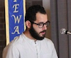

Dear Friends,
This August 15 to 17 in Berkeley, California, young adults and their elders will gather for an intergenerational summit on social, economic, and racial justice. Will you be there?
Cohosted by the Fellowship of Reconciliation and the Pacific School of Religion's Center for Social and Spiritual Transformation, The Future Is NOW: Doing Justice at Home will use a participant-led format to provide opportunities for conversation, collaboration, workshops, mural arts, poetry, and performances, with a focus on:
- Building Our Movement Across Generations
- Exploring Beautiful Resistance from the Strength of Spiritual Wisdom and Practice
- Creating the World We Want to See While Living in the Current System
Register now! The low registration fee is on a sliding scale of $35 to $50 to ensure this great event will be accessible to all.
This aweome multi-faith community of speaker-organizer-activists will feature:
Kazu Haga: founder and lead trainer of the East Point Peace Academy; Kingian Nonviolence trainer working with youth, incarcerated populations, and activists nationwide.
Mahsea Evans: poet, programming director at Cal Aggie House (Davis CA); holds M.Div. and M.A. degrees from the Pacific School of Religion, where his studies addressed the evolving prophetic aspect of spoken word as ministry for social transformation in the public square.
Shauen V. T. Pearce: educator, organizer, and strategist; new executive director of the Harrison Neighborhood Association (Minneapolis MN) after six years on FOR's national staff coordinating social, economic, and racial justice campaigns.
Rabbi Lynn Gottlieb: storyteller, artist, and peace activist; FOR Freeman interfaith organizing fellow; Jewish Voice for Peace rabbinic council member; co-founder, Shomer Shalom Network for Jewish Nonviolence.
Rev. Phil Lawson: lifelong prophetic advocate for building the Beloved Community; past executive director of the East Bay Housing Organizations (Oakland CA); cofounder of the National Council of Elders.
Josue Bustos: Los Angeles-based multimedia artist whose work is deeply rooted in the struggles of indigenous and non-indigenous communities; self-described "tech geek."
Saif Alsaegh: Iraq-born poet & writer now based in the United States; author of Iraqi Headaches, a poetry collection published in 2013.
Rev. Deborah Lee: project director of the Interfaith Coaliition for Immigrant Rights - Clergy & Laity United for Economic Justice; past program director for the Institute for Leadership Development and Study of Pacific & Asian North American Religion.
Jakada Imani: executive director of the Center for Social and Spiritual Transformation at PSR; past executive director of the Ella Baker Center for Human Rights, a national organization working to end mass incarceration and reinvest in communities.
Rev. Kristin Stoneking: FOR executive director; multifaith community organizer whose skills in strategic planning and moving organizations through change have supported diverse communities nationwide.
From Friday evening to Sunday afternoon, activists of all ages, ethnicities, religions, genders, sexual identities, and economic backgrounds from across North America will meet to share experiences, build collective strategies, express ourselves artistically, and strengthen skills.
 Please join the Fellowship of Reconciliation and the Pacific School of Religion's Center for Social and Spiritual Transformation for The Future Is NOW! Register today to join us in California's beautiful East Bay this August! We strongly encourage you to identify young people to attend and represent your community. Please join the Fellowship of Reconciliation and the Pacific School of Religion's Center for Social and Spiritual Transformation for The Future Is NOW! Register today to join us in California's beautiful East Bay this August! We strongly encourage you to identify young people to attend and represent your community.
Peace,
Lynn, Shauen, Kristin, Ethan, Linda, and the team at FOR |